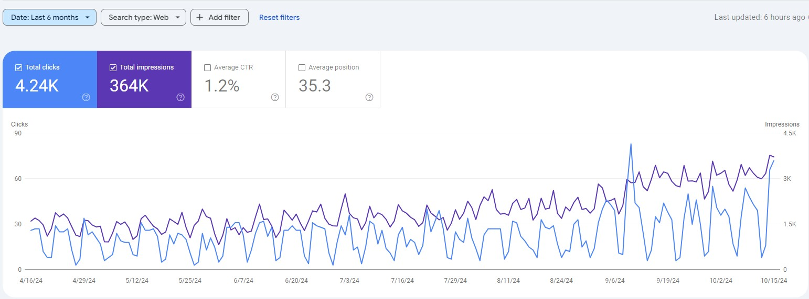
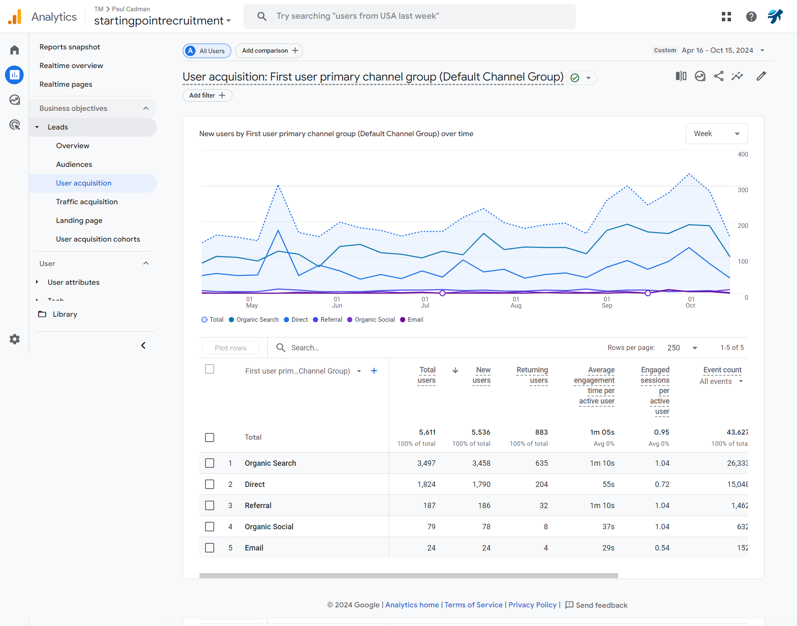

Technical SEO, local search optimisation and content strategy for a recruitment business, focused on improving organic visibility and attracting relevant candidates and employers.
Client: Starting Point Recruitment
Industry: Recruitment & Staffing Services
Starting Point Recruitment needed stronger organic visibility for recruitment-related searches across Walsall, Birmingham and surrounding areas.
The website required technical SEO improvements alongside stronger keyword targeting, local optimisation and clearer content aligned with the needs of both candidates and employers.
Local search visibility was also an important part of the project, particularly around recruitment services and location-based searches.
Reviewed the website for technical issues affecting crawlability, indexation, metadata, page structure, internal linking and overall search performance.
Technical improvements helped create a stronger foundation for recruitment service pages and location-focused content.
Researched recruitment-related searches to identify opportunities across candidate, employer and local recruitment queries.
Pages were aligned more closely with relevant search intent to improve visibility for commercially valuable recruitment terms.
Improved local search relevance around key service areas, including Walsall and Birmingham, while strengthening local signals across the website.
Improved existing website content through clearer headings, stronger keyword targeting, metadata optimisation and internal linking.
Content was developed around the questions and information needs of employers and job seekers.
Supported Google Business Profile optimisation to strengthen local visibility and provide consistent business information across local search.
Supported off-page SEO through relevant backlinks and local citations designed to improve authority and local search relevance.
The campaign delivered stronger organic search visibility and consistent search traffic across the reporting period.
Google Search Console recorded strong organic search visibility across the reporting period, generating impressions and clicks from recruitment-related searches.

Google Search Console performance showing organic search clicks and impressions.
Google Analytics also showed organic search contributing consistently to website sessions during the reporting period.

GA4 performance showing the contribution of organic search traffic across the campaign period.
The campaign combined technical improvements, local optimisation and recruitment-focused content to strengthen the site's overall organic search presence.
The focus was not only on increasing visibility, but on attracting searches relevant to recruitment services, employers and job seekers across key local areas.